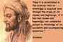
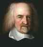

< < < Back
The Soul Of Man – Return Of Kings
The existence of the soul is of utmost importance for both philosophy and theology. It is the animating principle of our bodies by which we think, feel, imagine, and remember. Spirituality takes for granted the distinction between soul and body, and belief in an afterlife necessarily implies that the soul can exist outside of the body.
Almost every culture and religion on earth has some idea of the soul. We infer its existence from the inevitable facts of life: birth, death, dreams, ideas, and abstractions all suggest the reality of something beyond the visible and material organism. The soul is internal to us, but to some extent it is independent of us, hence the term “my mind was wandering.”
To my knowledge, science has not devised a way of quantifying or measuring the soul, which means unreflective men will dismiss the question of its existence out of hand. Consider this though: our host Roosh displayed considerable willpower and fortitude in the recent battle of Montreal. We cannot use a machine to declare that Jones has 34 units of willpower and Smith has 50, yet we still speak of willpower as an objective reality.
We will briefly examine the history of the soul in Western thought, for it offers important lessons for all men.
The Soul In Antiquity
The pre-Socratic Greek philosophers did not make distinctions between cosmology, psychology, or theology. The Hylozoists believed that all existing things were in some sense alive, with greater or lesser degrees of consciousness. The Milesian school tended toward material monism in their search for the animating principle of all things. For example, Thales, the father of philosophy, believed that water was the foundation of existence.
Anaximander attributed existence to a principle he called apeiron. He defined it as an infinite primordial mass from which all things are born and all things return when they die.
“Whence things have their origin,
Thence also their destruction happens,
According to necessity;
For they give to each other justice and recompense
For their injustice
In conformity with the ordinance of Time.”
Eventually the Greeks encountered the problem of knowledge, and with this discovery we see the beginnings of a psychological understanding of the soul. In the Timaeus, Plato combined psychology and epistemology. Relying on Pythagorean ideas, Plato theorized a world-soul derived from the realms of mathematical symmetry and musical harmony.
The world-soul is divided in two: sameness (tauton) where we find the intelligible order of eternal truths which we apprehend through reason and otherness (thateron), the realm of sensation and particular existence where human souls reside. Plato’s idea tended toward extreme transcendentalism where the body was considered the prison of the soul.
Aristotle defined the soul as “the first entelechy of a physical organized body potentially possessing life.” He emphasized the close union between body and soul, but he was never able to fully describe the degree of separation between the two or explain the relationship between mind and soul. Aristotle identified three hierarchies of souls: growth, sustenance, and reproduction were common to all living things; willed motion and sensory faculties, shared by animals and humans; and reason which humans alone possessed.
The Stoics believed that the soul was like the divine breath animating the body, but that it was still a corporeal thing made of ethereal matter. The Epicureans accepted the atomism of Democritus, believing the soul was made up of the finest ground atoms in the universe and held together by the body. If the body is destroyed, the atoms are dispersed and life is lost.
The Soul In The Middle Ages
Avicenna (980-1037) continued Aristotle’s line of thought, which in turn influenced Scholastic philosophy. Avicenna devised the “floating man” thought experiment as a way to demonstrate the immateriality of the soul. He asks us to imagine ourselves suspended in midair, isolated from all sensory input, severed from contact even with our own bodies.
Avicenna argues that even in this situation, we still retain our self-awareness. This implies that the soul is immaterial, separate from the body, and apprehended through the intellect.

Before the Aristotelian revival in the West, Neo-Platonist thought and the work of St. Augustine of Hippo dominated psychology and spirituality. Plotinus believed the soul contained the body and was the first to assert that the soul was an undivided presence permeating the entire body, as opposed to being focused in one of the vital organs.
Augustine defined the soul as “a special substance, endowed with reason, adapted to rule the body.” Like the Greeks whose philosophy he knew so well, Augustine asserted the superiority the rational to the non-rational. Reason was the highest faculty of the human soul because it allowed us to grasp truths that transcend the ever-changing physical world.
Augustine argued that much of what we know about the world relies on faith and trust in authority. We cannot hope to independently verify everything about the past, for even much of what we know about the present is a matter of trust. I haven’t personally worked out the mathematics of relativity, for example, but I accept it as true anyway. He distinguishes between belief and understanding: we believe many things we do not understand, but belief is the necessary prerequisite for understanding.
St. Thomas Aquinas largely accepted Aristotle’s description of the soul, in opposition to the dualistic tendencies of Platonism. A man cannot be a mind without a body
because it is one and the same man who is conscious both that he understands and that he senses. But one cannot sense without a body, and therefore the body must be some part of man. (Summa Theologiae)
For Thomas and Aristotle, the soul is the animating principle of the body. Without a body, a soul is an incomplete substance, unable to perform its natural activities. Without a soul, the body dies.
The Soul In The Modern Age
The connection between mind and body long plagued the early modern philosophers. Rene Descartes defined the soul as a thinking substance and the body as extended substance with only Divine intervention making coordination between the two possible.
Similarly, Gottfried Leibniz postulated a theory of pre-established harmony: the mind and the body are like two clocks perfectly synchronized but forever separate.
Thomas Hobbes (1588-1679) thinks you have no soul
Beginning with Thomas Hobbes and continuing through David Hume, Immanuel Kant, and Archbishop Richard Whately we see more philosophers and theologians questioning either the soul’s existence or our ability to prove that it exists.
Strengthening The Soul
Obviously there are many more understandings of the soul in other philosophical, religious, and mythological traditions that I have not summarized here. Whether we refer to it as the soul, the spirit, the mind, or the animating principle, man has always believed that he was more than his body. When Smith dies, we refer to his “remains” because the man whom we knew as Smith is no longer with us although his body is still present.
Monotheistic religions all believe in the immortality of the soul, and that our essence will endure beyond our death whether it’s in heaven or hell. In the Gospels, Jesus Christ is most concerned with the spiritual state of man, urging his followers not to fear those who can only kill the body but he who kills both body and soul.
Belief in man’s spirit does not necessarily need to be based in religion however, as the ancient Greeks showed us. Think of a perfect triangle. Have you ever seen a perfect triangle in the world? You have not, but the mental image of the perfect triangle is the measure by which we judge the imperfections of existing triangles.
The soul animates the body and gives us our drive. Science can tell us that if we eat right and lift heavy, we will build muscle. Knowledge of these facts is of no use to us if we lack the willpower to act on them. What do we mean when we describe someone as having a strong spirit? Generally we mean that they show a high degree of perseverance in pursuit of their goals, or a dogged refusal to give up.
Strengthening our bodies is a worthy pursuit, but we cannot do that if we lack strength of spirit. We can build up our strength of soul by practicing virtue, reading and imitating the lives of great men, and denying ourselves short-term pleasures in pursuit of a greater good. If you expect to do any good at all in this world, you best start taking better care of your soul.
Read More: You Are What You Feed Your Soul


{kind=link}
{kind=link}
{kind=link}
{kind=link}